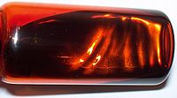

Numero atomico: 35
Massa atomica: 79,90
Temperatura di fusione (°C): -7
Temperatura di ebolizione (°C): 59
Energia di prima ionizzazione (kj/mol): 1140
Elettronegatività (secondo Pauling): 2,96
Densità: 3,12
Numeri di ossidazione: ±1+3+5
Configurazione elettronica: 1s2, 2s2, 2p6, 3s2, 3p6, 3d10, 4s2, 4p5
Maggiori Informazioni